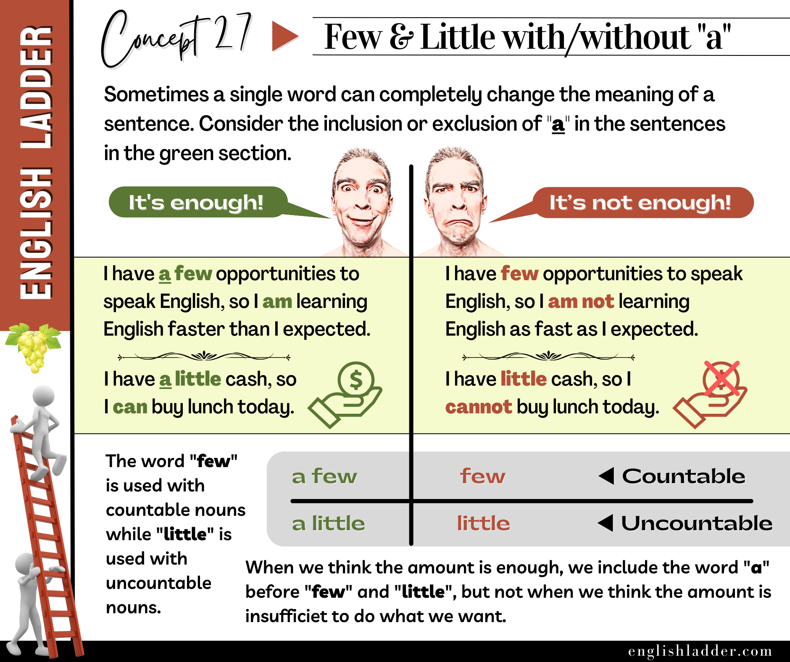

Prompt 01
I have ______ friends in the city, so I am not lonely.
Reveal answer
The correct answer is b) a few . “A few” indicates a small but sufficient number of friends. “Few” would indicate not enough friends to avoid loneliness.
Grammar Concepts #27
This rebuilt lesson keeps the original concept image, tightens the structure, and turns the explanation into a clearer self-study guide.

The words few and little can drastically change the meaning of a sentence based on their inclusion or exclusion of the article “a.” Understanding how to use these words correctly is crucial for conveying the right amount or quantity.
Example of Countable Nouns:
Example of Uncountable Nouns:
Context: Speaking about job opportunities.
Context: Talking about cash or money.
To further solidify understanding, here are more example sentences with varied contexts:
Countable Nouns:
Uncountable Nouns:
Understanding the correct usage of few, a few, little, and a little is essential for accurate communication in English. Using these words appropriately will help convey the intended meaning and improve overall language proficiency.
4o
Good, but be more rigorous in your explanations, and add the emojis 😀 and 😕 to show the mood of the sentences.ChatGPT
Concept Explanation
The words few and little can drastically change the meaning of a sentence based on their inclusion or exclusion of the article “a.” Understanding how to use these words correctly is crucial for conveying the right amount or quantity.
Examples of Countable Nouns:
Examples of Uncountable Nouns:
Context: Speaking about job opportunities.
Context: Talking about cash or money.
To further solidify understanding, here are more example sentences with varied contexts:
Countable Nouns:
Uncountable Nouns:
Understanding the correct usage of few, a few, little, and a little is essential for accurate communication in English. Using these words appropriately will help convey the intended meaning and improve overall language proficiency.
Answer the quiz questions below with responses consistent with the grammar concepts taught in this article.
I have ______ friends in the city, so I am not lonely.
The correct answer is b) a few . “A few” indicates a small but sufficient number of friends. “Few” would indicate not enough friends to avoid loneliness.
There is ______ water left in the bottle, not enough to quench my thirst.
The correct answer is b) little . “Little” indicates an insufficient amount. “A little” would indicate a sufficient amount to quench thirst.
She has ______ money, so she can buy lunch today.
The correct answer is a) a little . “A little” indicates a small but sufficient amount of money. “Little” would indicate not enough money to buy lunch.
He answered ______ questions correctly on the test, so he passed.
The correct answer is a) a few . “A few” indicates enough correct answers to pass. “Few” would indicate not enough correct answers to pass.
I have ______ opportunities to speak English, so I am learning faster than I expected.
The correct answer is a) a few . “A few” indicates a sufficient number of opportunities. “Few” would indicate not enough opportunities to learn faster.
There are ______ seats available, so we might not get tickets for the concert.
The correct answer is b) few . “Few” indicates an insufficient number of seats. “A few” would indicate a sufficient number of seats.
I have ______ opportunities to speak English, so I am not learning as fast as I expected.
The correct answer is a) few . “Few” indicates an insufficient number of opportunities. “A few” would indicate a sufficient number of opportunities to learn faster.
I have ______ cash, so I cannot buy lunch today.
The correct answer is b) little . “Little” indicates an insufficient amount of cash. “A little” would indicate a sufficient amount of cash to buy lunch.
I have ______ money, so I cannot buy lunch today.
The correct answer is b) little . “Little” indicates an insufficient amount of money. “A little” would indicate a sufficient amount of money to buy lunch.
She has ______ friends, so she feels lonely.
The correct answer is b) few . “Few” indicates an insufficient number of friends. “A few” would indicate a sufficient number of friends to avoid loneliness.
She brought ______ cookies to the party, which was not enough for everyone.
The correct answer is b) few . “Few” indicates an insufficient number of cookies. “A few” would indicate a sufficient number of cookies for everyone.
She brought ______ cookies to the party, which was enough for everyone.
The correct answer is a) a few . “A few” indicates a sufficient number of cookies. “Few” would indicate not enough cookies for everyone.
There is ______ information available to make a decision.
The correct answer is b) little . “Little” indicates an insufficient amount of information. “A little” would indicate a sufficient amount of information.
There is ______ water in the glass, enough to fill the cup.
The correct answer is a) a little . “A little” indicates a sufficient amount of water. “Little” would indicate not enough water to fill the cup.
There is ______ milk in the fridge, not enough for cereal.
The correct answer is b) little . “Little” indicates an insufficient amount of milk. “A little” would indicate a sufficient amount of milk for cereal.
She has ______ patience left after dealing with the kids all day.
The correct answer is a) little . “Little” indicates an insufficient amount of patience. “A little” would indicate a sufficient amount of patience.
He gave ______ effort in the project, resulting in poor outcomes.
The correct answer is b) little . “Little” indicates an insufficient amount of effort. “A little” would indicate a sufficient amount of effort.
He put in ______ effort in the project, leading to its success.
The correct answer is b) a little . “A little” indicates a sufficient amount of effort. “Little” would indicate an insufficient amount of effort.
He gave ______ of his time to help with the project, which was appreciated.
The correct answer is a) a little . “A little” indicates a sufficient amount of time. “Little” would indicate an insufficient amount of time.
There are ______ apples in the basket, not enough for everyone.
The correct answer is b) few . “Few” indicates an insufficient number of apples. “A few” would indicate a sufficient number of apples for everyone.
There are ______ apples in the basket, enough for everyone.
The correct answer is b) a few . “A few” indicates a sufficient number of apples. “Few” would indicate not enough apples for everyone.
He received ______ invitations, so he is not sure which party to attend.
The correct answer is b) a few . “A few” indicates a sufficient number of invitations. “Few” would indicate not enough invitations to be unsure.
He received ______ invitations, so he is sure which party to attend.
The correct answer is a) few . “Few” indicates an insufficient number of invitations. “A few” would indicate a sufficient number of invitations to be unsure.
He has ______ friends to help him move, so he is worried.
The correct answer is a) few . “Few” indicates an insufficient number of friends. “A few” would indicate a sufficient number of friends to help him move.